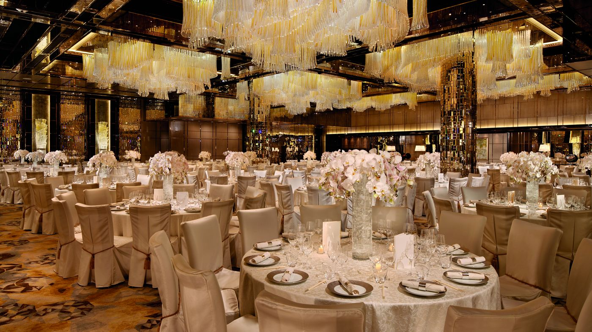
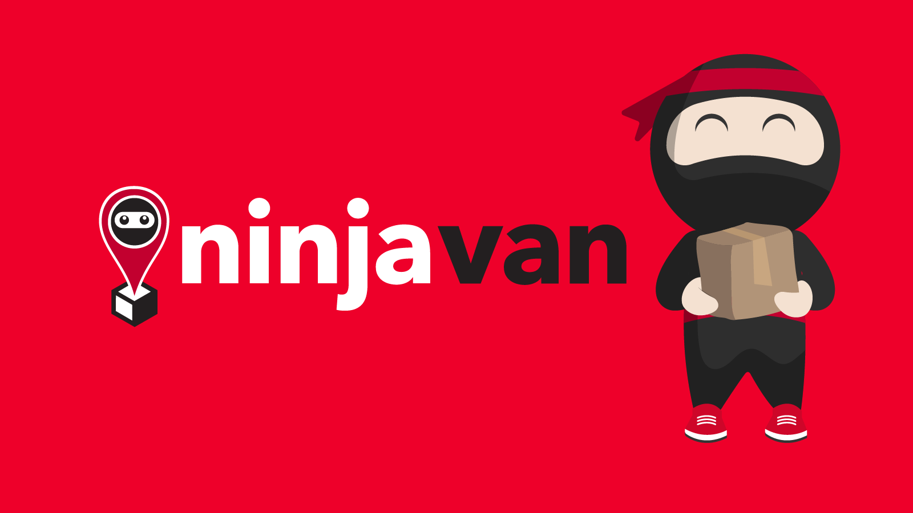

During my Semester Year 1 poly break, I wasn't actually planning to work because
I decided to rest after the semester. My friend introduced me to a flexible job that required
F&B services to important guests such as Prime Ministers. For instance, picking up and serving
food & beverages to them. I worked at a fixed location, which was the hotel called
Ritz Carlton. Through this working experience, I developed good teamwork and social skills as
I had to communicate with other staffs to help carry out the wedding/events and also attend to
the guests and communicate with them.
I worked this job after I stopped working as a warehouse assistant at Nippon Express. I had
few more months before my post-secondary education starts so I decided to look for another job
as I did not want to waste any time sitting at home doing nothing. This job required me to work
with my friend & go door to door to deliver parcel at specific locations. To illustrate this,
we had to load the van with parcels nicely, fit ourselves in the van full of parcels &
travel to the chosen neighbourhood. Through this working experience, I learn how to build my social
skills into talking to strangers & making sure I deliver correctly on time. I have to manage
my time properly so that the delivery process does not take too long.
This job was my first proper part-time job where I had to wake up at 8am every morning. This was
right after I finished my O-Levels major exam, I was invited by four of my friends to work together.
This job lasted me one month as we did not want to continue working. Being a warehouse assitant for UNIQLO
required me to carry heavy boxes & pick specific clothing properly. I had to work overtime everyday except
Sunday which was very tiring. Overall experience was fun & tough but I definitely learnt to be more
disciplined in waking up & persevering through to earn money.


On to the Co-Curricular Experience! >